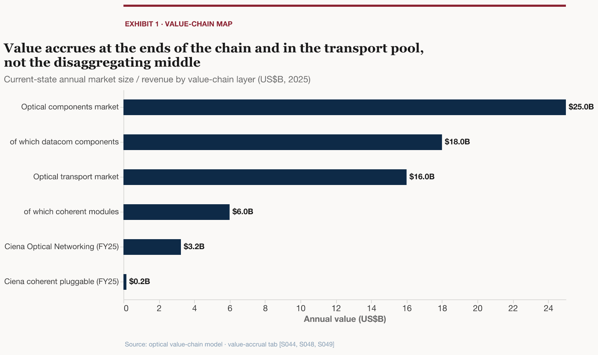

Where Value Accrues in the AI Optical Value ChainA two-ends-and-a-pool value-accrual map plus a crowded-versus-overlooked expectations screen across six chain layers
The optical transport market has unambiguously turned on AI — $16B in 2025 (+10% YoY) with DCI-driven WDM equipment up nearly 40% — so the live question is no longer whether the wave is real but where the dollar accrues. It pools at the two ends of the chain (the scale system and the merchant components) and in the durable amplifier/ROADM line system, and away from the disaggregating standalone-transponder middle that IPoDWDM is hollowing out (pluggable coherent set to carry over 60% of telecom bandwidth by 2026). On a valuation/expectations read most of the obvious longs are priced for perfection, Ciena is the reasonable way to own the scale-system end, and the agentic-traffic metro inflection is real for DCI but misattributed to the regional metro-access layer.
$16BTotal optical transport market, 2025 (+10% YoY)[S044]
3xCiena “in & around the datacenter” AI opportunity, 2024→2025[S208]
$7.7BCiena record order backlog, FQ2 FY2026 (supply-constrained)[S216]
$50BAI-driven optical TAM by 2029 (forecast)[S078]
$13BLumen Private Connectivity Fabric AI deals secured[S052]
What it means
Value-accrual verdict: the dollar pools at the two ends — the scale system (Ciena) and the merchant components — and in the durable line system, not the disaggregating standalone-transponder middle that IPoDWDM is eating from both sides (pluggable coherent set to exceed 60% of telecom bandwidth by 2026).
The amplifier/ROADM line system is the durable, under-appreciated pool: the 2022-era fear that IPoDWDM would cannibalize DWDM has not shown up at this layer — the physics (low-launch-power pluggables, optical bypass) forces continued amplification — and its merchant suppliers (Lumentum, Coherent) are priced for datacom, with line-system exposure as un-sized optionality.
Crowded versus overlooked: most AI-optical component longs (Astera, Marvell, Credo) are priced for a flawless ramp; Coherent and Fabrinet are the reasonably-valued component exceptions, Ciena is the reasonable scale-system end once a one-time-charge multiple is stripped, and Dycom is the cleanest fiber-OSP services pure-play.
The forward inflection is real but misattributed: DCI / scale-across is unambiguously booming, but the regional metro-access layer the agentic-traffic bulls point to is the weakest part of the market (WDM Metro declined for seven straight quarters) — real-for-DCI, not-yet-for-metro-access.

The value-accrual spine: across the six chain layers (carrier to installer) the optical dollar lands at the two ends — the scale system and the merchant components — and in the durable line-system pool, not the disaggregating standalone-transponder middle. Source: Dell'Oro, Cignal AI, Cisco, company filings, Hendren analysis.
Go deeper
The value-accrual map — The two-ends-and-a-pool framework: why IPoDWDM hollows out the transponder box while the line system stands.
The durable line-system socket — Why the amplifier/ROADM pool survives disaggregation — and why its merchant suppliers read as un-priced optionality.
Investible-pockets shortlist — The crowded-versus-overlooked screen across components, the scale system, services, carriers and the private map.
Ciena, the reasonable scale system — How to read Ciena once the one-time-charge multiple is stripped — the reasonable way to own the scale-system end.